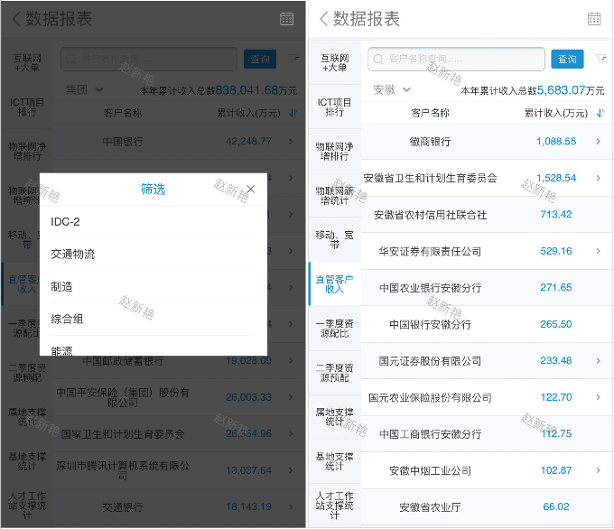

列表默认显示全国各省本年互联网+大单的数量和完成率。点击右上角时间选择可以查看其它年份的数据。
点击某个省份可以查看本地网的互联网+大单的数量信息。
点击城市可以查看区县互联网+大单的数量信息。
点击页面右侧“筛选”可以筛选查看互联网+行业的大单完成情况。
显示某个互联网+行业的各省大单情况，并可以逐层钻取到区县。
此表为静态数据，定期进行更新。
默认显示【在执行项目合同金额】标签页。
显示各省在执行项目合同金额单位亿元。不可点击钻取数据。按金额从大到小排序显示。
点击【合同执行偏差率】显示各省合同执行的偏差率信息。不可点击钻取数据。按偏差率从小到大排序显示。
页面上方显示本年累计开卡净增总数和本年累计激活净增总数。
页面下方显示物联网净增各省排行信息，可以按开卡净增户数和激活净增户数排序。不可点击钻取数据。
默认显示本年的物联网新增情况，可以通过日期选择进行区间选择查询。
默认按行业展示新增情况。展示7个行业的用户增长情况，每个行业可以查看分省情况和客户清单。
按地区查看为显示各省的用户新增情况，并可以按行业按各省份的发展情况及客户清单列表
页面上方显示本年移动新增用户总数和宽带新增用户总数。
页面下方显示各省移动用户和宽带用户的完成率和完成量。不可数据钻取。
默认显示集团的直管客户清单和收入情况。可以筛选显示其他省份的直管客户收入情况，目前只做了部分省份。
可以通过客户名称搜索，查看具体客户的收入情况。
点击某个客户可以逐级钻取显示此客户下级的逻辑客户列表和收入情况。
可以筛选一个划小团队所管理的客户收入情况。
划小团队的选项会根据选择的省份不同而显示不同的确的划小团队列表。
查看一季度资源配比信息，页面数据列较多可横屏查看
查看二季度资源预配信息，页面数据列较多可横屏查看。
查看本年属地支撑情况，可通过年份切换查看其它年份的数据。
查看本年基地支撑情况，可通过年份切换查看其它年份的数据。
查看本年人才工作站支撑情况，可通过年份切换查看其它年份的数据。
查看某月的互联网+大单完成情况。
查看某月的云业务完成情况
查看某月的物联网业务累计完成情况信息。
查看某季度新兴ict领先奖的获奖情况。
可通过右上角的时间切换功能查看其它其它季度的数据。